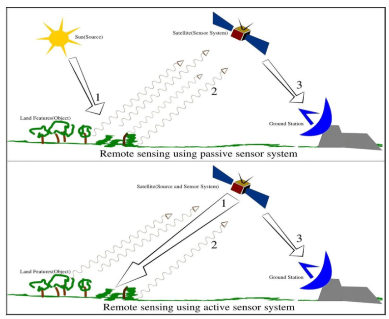
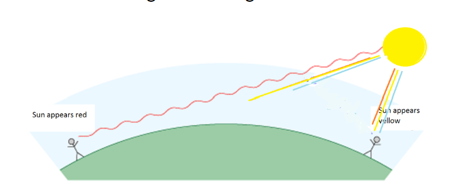
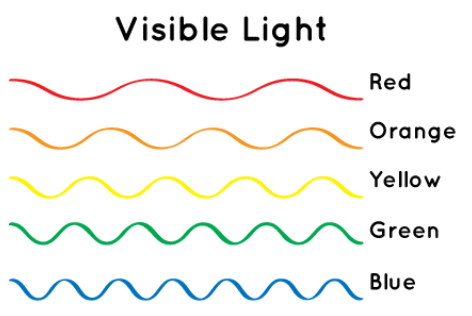
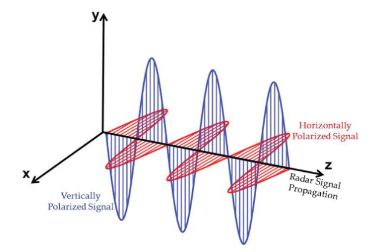
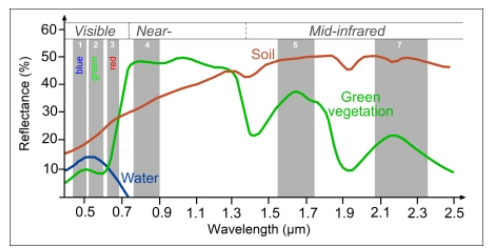

2 Week 1 study diary
2.1 Summary
2.1.1 Sensor
- Passive (human eye, camera, satellite sensor)
Use available energy (reflected sun energy)
Emit nothing
Energy is in electromagnetic waves
- Active (Radar, X-ray, LiDAR)
Have an energy source for illumination
Actively emits electormagentic waves and then waits to receive (Synthetic Aperture Radar (SAR) collects at longer wavelength that can pass through clouds)

2.1.2 Electromagnetic radiation (EMR)
2.1.2.1 Terms
EMR: Waves of an electromagnetic field, travel through space and carry radiant energy
Electromagnetic wave: part of the EMR spectrum, EMR propagates as waves
Radiant flux: Energy per unit of time
2.1.2.2 Interacting with earth’s surface
- Surface
Absorb energy
Transmit energy
- Atmospheric: its particles scatter energy
- Rayleigh = particles are very small comparered to the wavelength —- atmosphere
The longer the wavelength is, the longer its light scatter reach (e.g. sky color)
The more it scattered, the deeper color it shows (e.g. shallow water vs deeper ocean)


Mie = particles are the same size compared to the wavelength
Non selective = particles are much larger than the wavelength
2.1.2.3 Polarization
Single: same polarization transmitted and received
Dual: One sent, different one received
HH = emitted in horizontal (H) and received in horizontal (H)

- Quad polarization: system can transmit and receive four types
2.1.3 Data
Formats: raster
Resolutions
Spatial resolution
Spectral resolution: how many surface acrossed visible spectrum.
Ture color: what human see

- Radiometric resolution
The higher the bit, the more information (light or reflectance)
- Temporal resolution
The revisit time of the sensor (how often)
- Jargon
Digital number(DN): raw data
Radiance: fixical data, also called Top of Atmosphere (TOA) radiance
Reflectance: measuring the property of a material, remove the effects of the light source in radiance